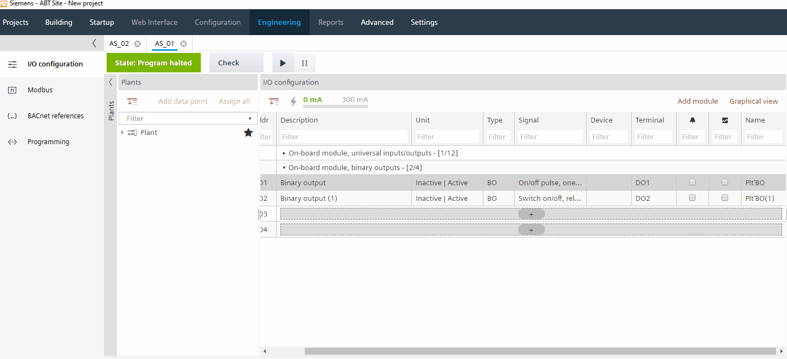
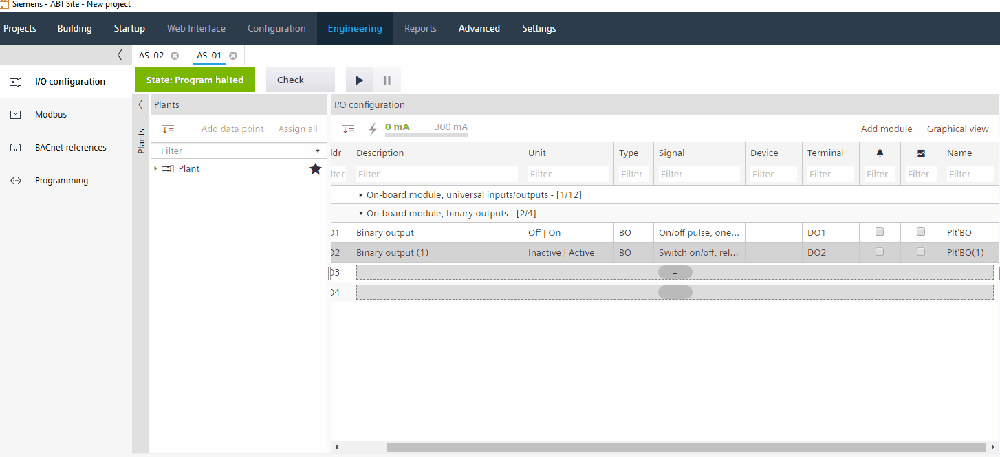

创建自定义状态文本
直接在工程表中为 PXC4/5/7 器件创建自定义状态文本：
- Custom state texts can be created for binary and multi-state data points.
- The custom state texts can be re-used in any editor (engineering or programming).
- The custom state texts can be re-used within the same device.
- The custom state texts can be re-used also in a different device in the project.
- The default of custom state texts is defined with 20. Increasing the amount of custom state texts makes ABT Site slower. Go to Settings > Naming defaults and change the value by Number of custom state texts.
Number of custom state texts
Create custom state texts

- Go to Building > Building structure.
- Right-click an automation station and select Go to engineering.
- Open the I/O configuration task.
- In the Plants navigation view, select a binary or multi-state data point.
- Double-click the Unit field.
- In the State text dialog box, click the value (in this example, values Inactive and Active) you intend to customize.
- Enter new custom state text (in this example, values Off and On).
Note: Spaces are not allowed. - Click OK.

文本长度至少需要 2 个字符。
- The new custom state text is saved to text database and is listed as selectable in the drop-down list.
- Customer state text are marked with #[figure][state text].

还可以在右侧的 IO 属性视图中设置自定义状态文本。